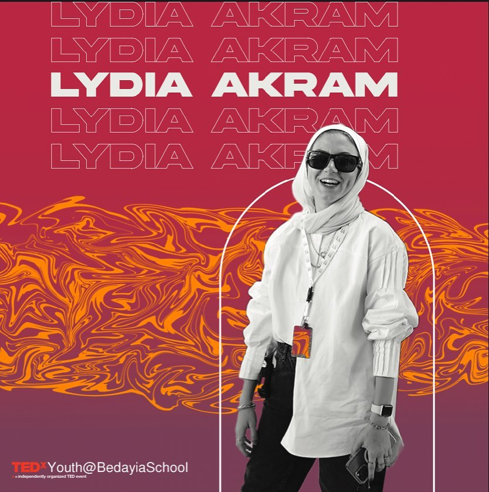
Lydia Akram
An entrepreneur, who has been working the hardest to achieve an
eminent bazar that gathers all what you need in one place! Our stage
is welcoming the founder of “Lydiaakrammarket”! Lydia akram started
her journey with studying logistics and Supply chain management at
Arab Academy University. She dug her own path to success following a
remarkable goal: ثق في المحلي. With her ambitious spirit & wealth of
experience, she has come to tell us about marketing strategies with
tips to establish your own brand. Await our glorious Lydia to get
all you need from the business hassle!
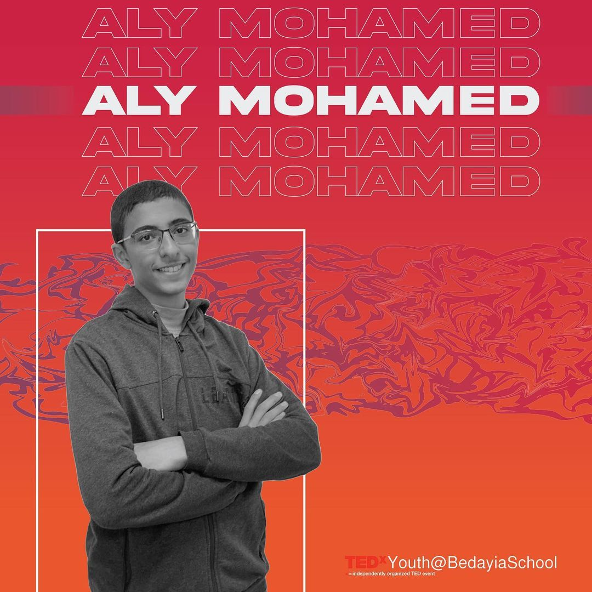
Aly Mohamed
Meet Aly, a 15-year-old computer science and AI enthusiast ready to
captivate you with his insights on AI. Because Artificial
Intelligence and Computer Science are currently a huge part of our
world, Aly has developed a deep understanding of the intricacies of
computer science. He is eager to share his vision and inspire the
next generation of young innovators with the advancements of AI and
how it'll be the game changer in our future world.
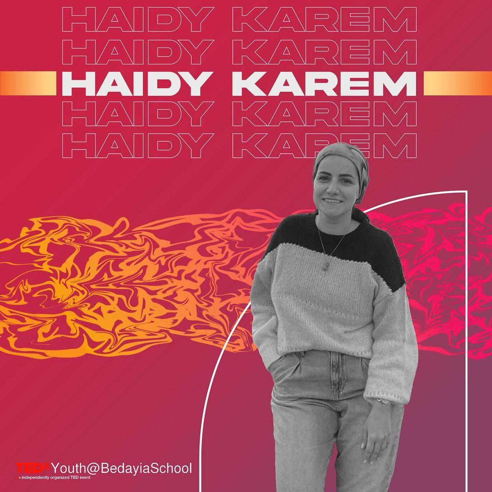
Haidy Karem
Haidy Karem, a mother of a Down Syndrome child, will be talking
about how her personal life has challenged her to start her own
career in the disability field. A few years ago, BOND was founded by
Haidy to build a community that accepts others' differences and to
raise awareness about Down Syndrome. Join us on the 17th of February
to learn more about Haidy's touching journey!
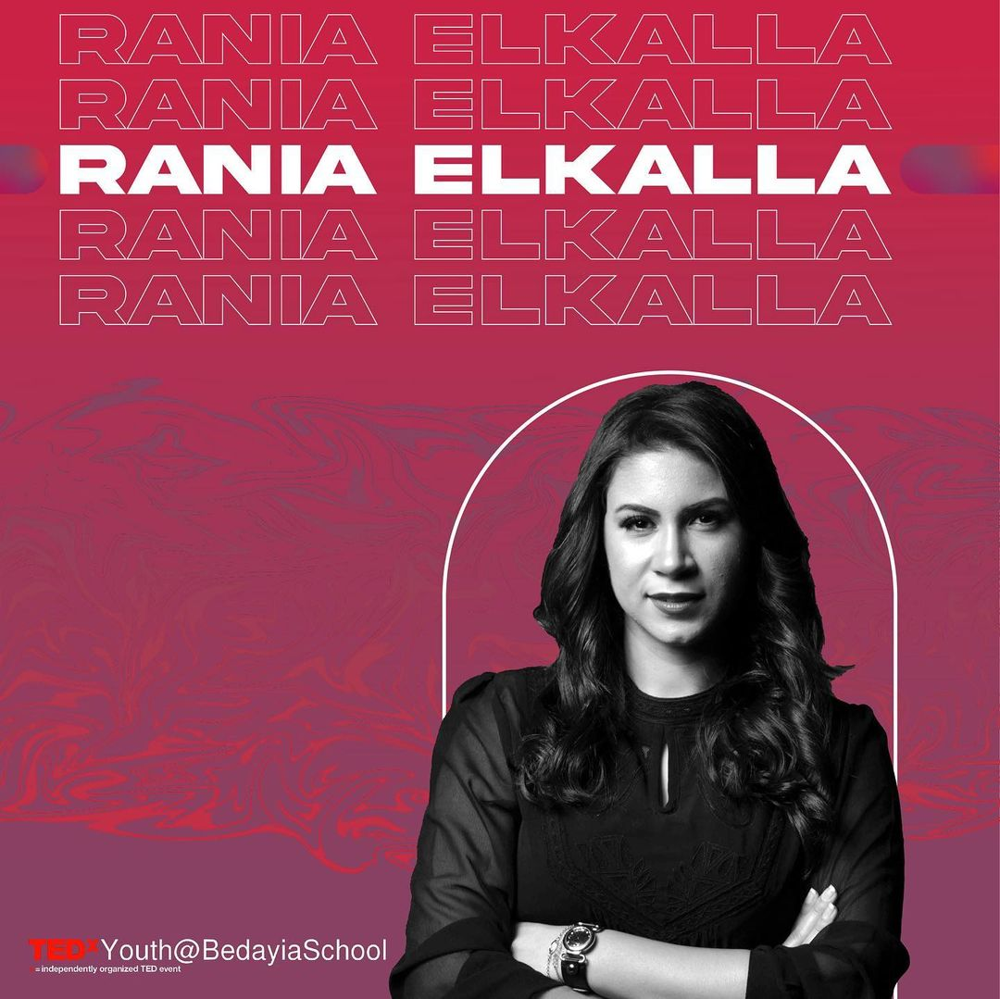
Rania ElKalla
They say creativity has no limits, that one can be creative on the
most simple or extravagant ways. Meet our third speaker, Rania
Elkalla! Rania, CEO of Shell Homage, will bring to our stage the
concept of beauty despite its origin, taking us through her process
of transforming food waste into the most exquisite products. She'll
also discuss the integration of sustainable concepts to our life and
how to apply your creativity all around you. Learning more about the
topic is one week away; make sure you don't miss out!
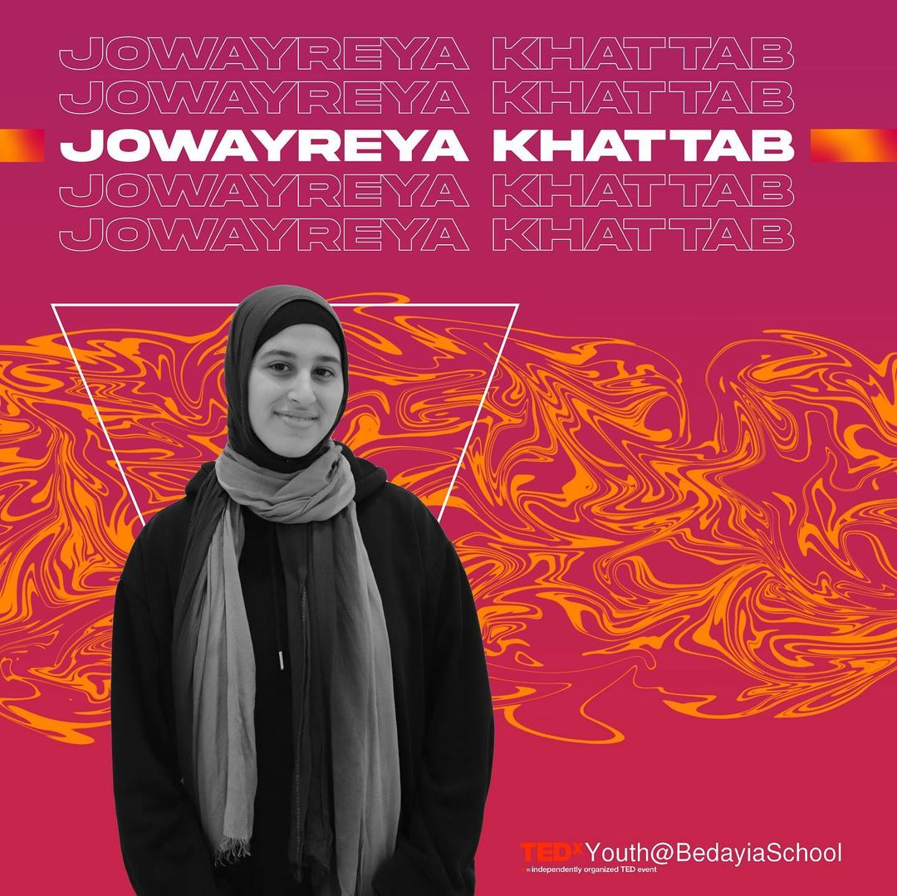
Jowayreya Khattab
Our stage is welcoming Jowayreya Khattab, a DP1 student who's still
trying to find a career path. Lately, the media has been portraying
entrepreneurship as the sole model of success; however, there are
definitely myriads of other routes to success. That's why Jowayreya
will be exploring different answers of this intriguing question: is
entrepreneurship the only path towards achievement?
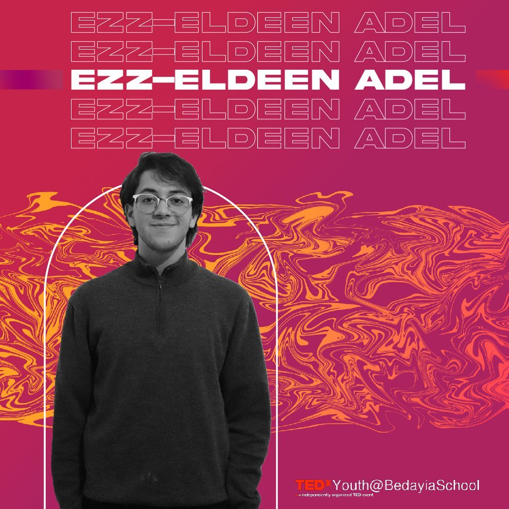
Ezz-Eldeen Adel
Didn't we all experience some kind of loss before? Whether it's a
person or an anticipated opportunity, anyone can potentially suffer
from loss. Ezz El Deen will dive deep into the concept of loss
through a new psychological perspective. He'll also provide us with
the steps of effectively coping with grief while tackling the
importance of self-awareness and emotional intelligence during the
process of overcoming a loss. Join us on the 17th of February to not
miss out on this talk!
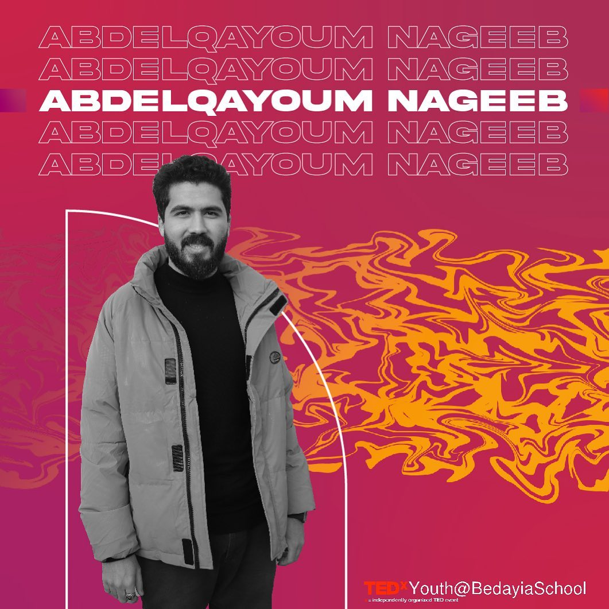
Abdelqayoum Nageeb
Breaking the typical performances stereotypes, Abdelqayoum will be
rocking the stage with a special performance different than all what
we've seen. He'll tackle a series of relatable topics that we all
face or resonate with. In his lively staging, every word he says
will have a significant moral behind it. He'll be exploiting the
rich arabic lanaguage to portray a message. A moral is to be
learned! Will you be able to uncover it??
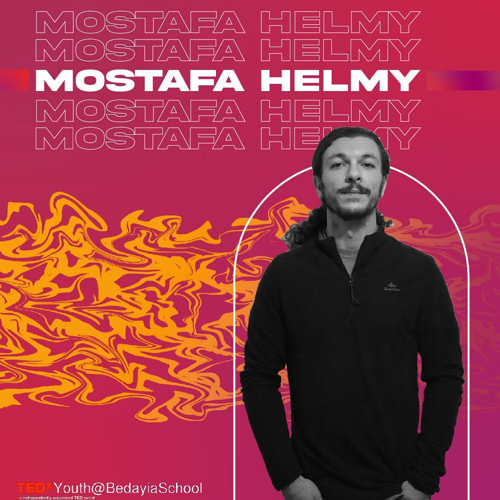
Mostafa Helmy
Mostafa Helmy, a person who's just like many of us, never took an
action towards the environment when he was younger. Nevertheless, as
he grew older, Mostafa's priorities changed and his current goal is
to meet our needs without compromising the ability of future
generations to meet their own. Driven by his urgent consideration
towards future generations, Mostafa will discuss sustainability
while highlighting the importance of considering the possible
environmental implications of our actions.JOIN US ON THE 17TH OF
FEBRUARY to explore how it is never too late to take an action!!!
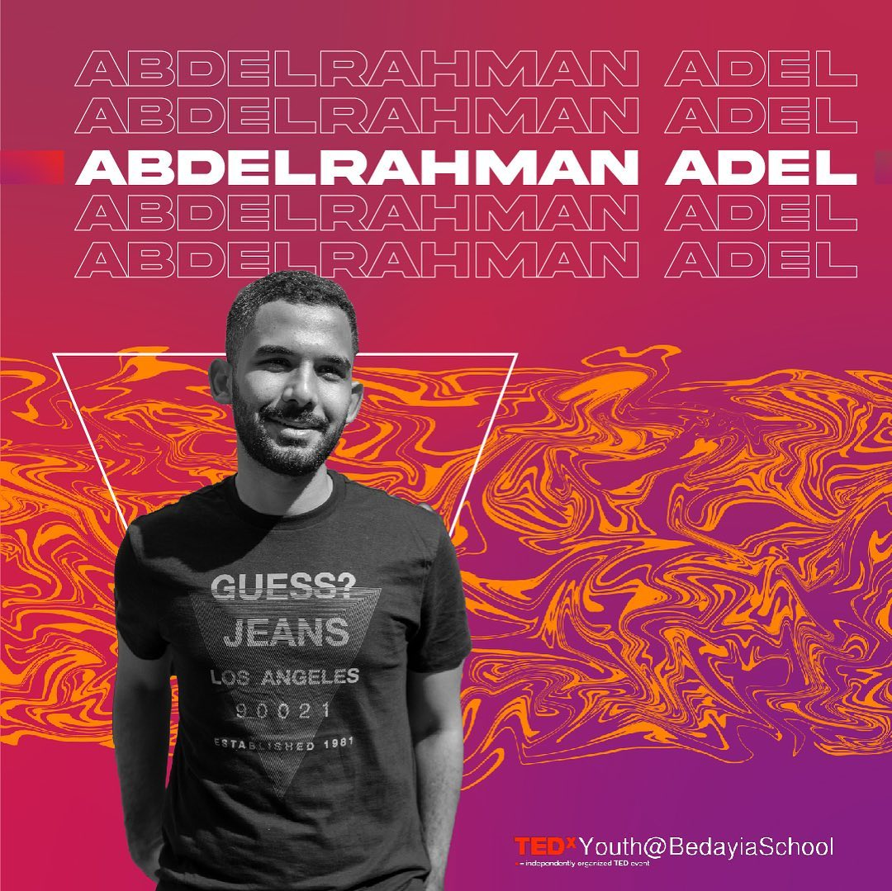
Abdelrahman Adel
You can't refer to Abdelrahman as your typical Egyptian explorer. He
has redefined his passion of traveling through visiting fairly
unknown, yet culturaly rich locations. Through years of travelling
and starting his own tour-organizing platform "Redefine", he will
ultimately change how we look on local places in Egypt. He will
emphasize on the idea that happiness isn't linked with the name of
the place you're travelling to; you can still enjoy your time by
exploring local hidden gems in Egypt.
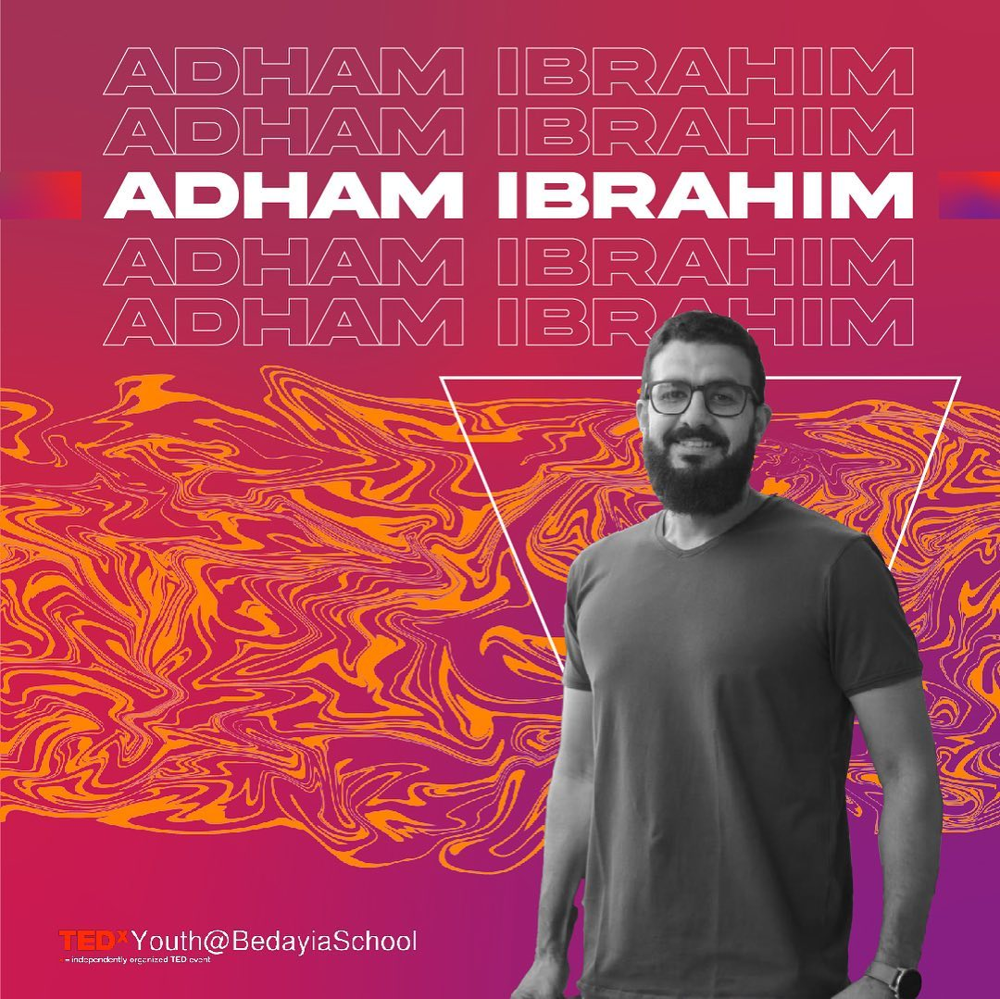
Adham Ibrahim
Generally there are two types of people when they face a problem:
the person that victimizes themselves and the person who attempts to
confront and resolves the issue. Every person goes through phase in
life, and here Adham will explain how to approach issues/challenges
and implement the best course of action. Join us on the 17th of
February to understand more .
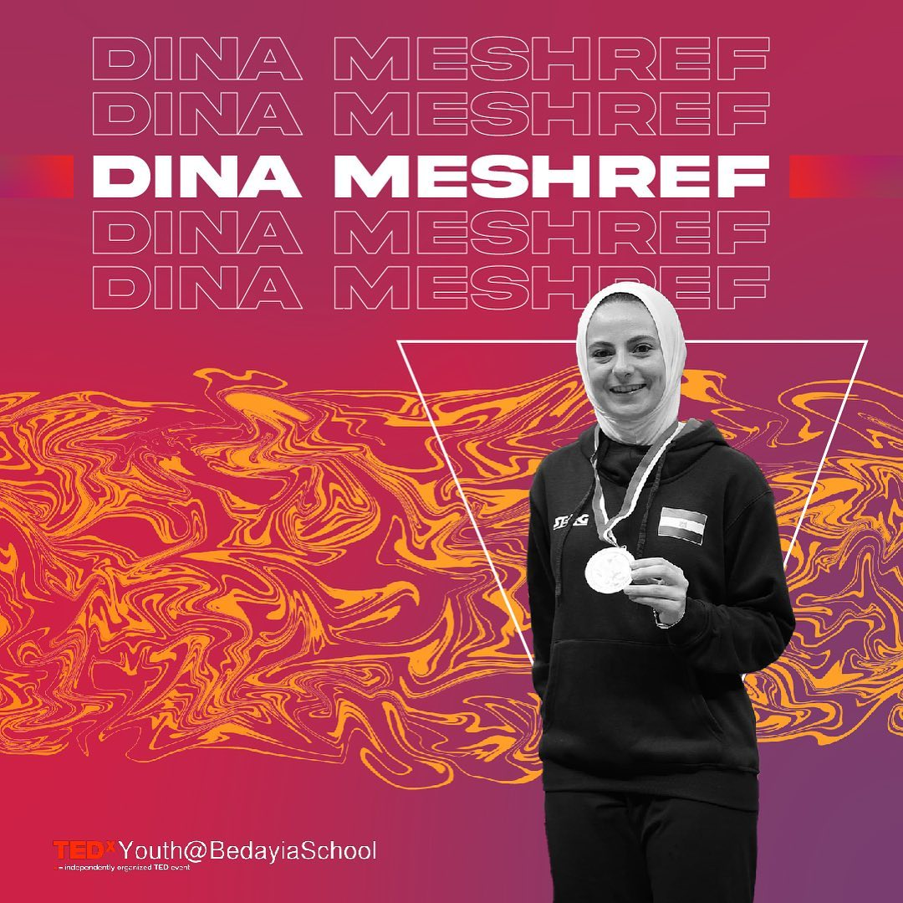
Dina Meshref
Dina believes that hard work leads to the best course of action.
Surrounded by a family of champions, Dina decided to carry on with
her parents legacy in the world of table tennis which gave her a
chance to bring an endless list of achievements to life. The 3x
Olympian and 3x African champion will tell us about the challenges
that she faced in her journey and how these challenges has shaped
her into the person that she is today. You wouldn't find advice
better other than the one who have been through it all, so try to
not miss this talk!
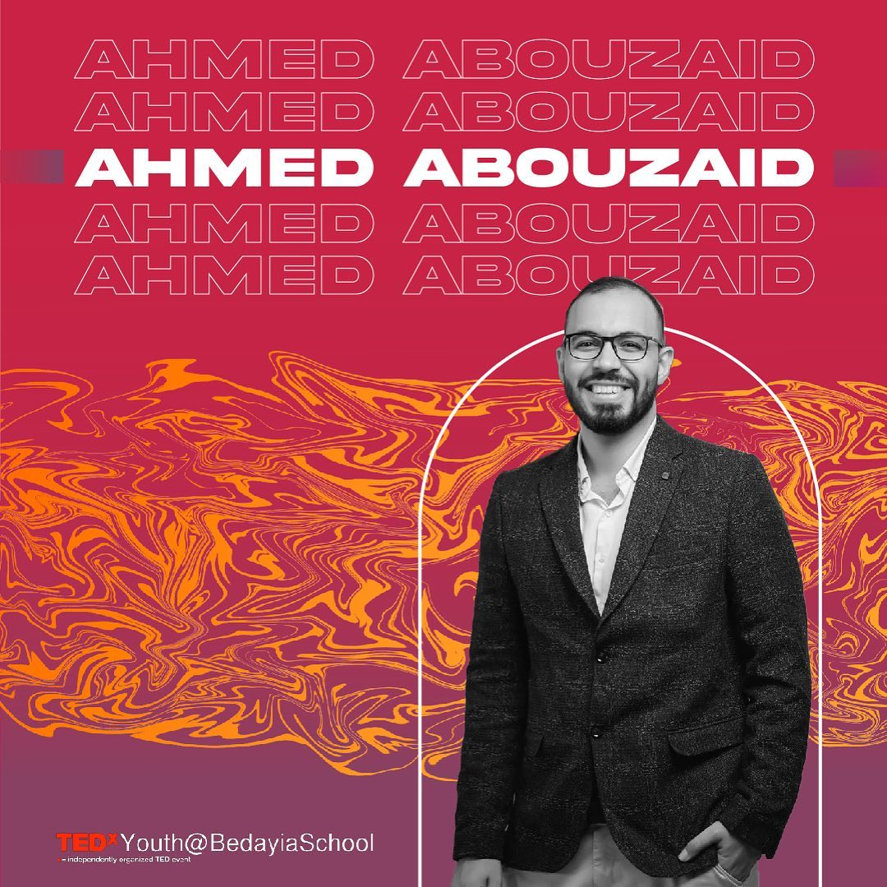
Ahmed Abouzaid
Everyone has a distinctive trait that differentiates him from
everyone. Ahmed Abouzaid, who is one of the most sucessful arabic
content creators, exceptionally embraced his through sharing words
and tips that influenced numerous students from all over the world.
He started creating content because he excelled academically and
wanted to share his. Abouzaid sees that everyone, including you, has
a potential that's ready to erupt and influence the world. In order
to arise with your uniqeuness and erupt your potential, JOIN US ON
THE 17TH OF FEBRUARY TO GET THE TIPS AND TRICKS.